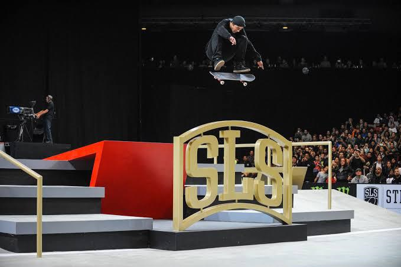
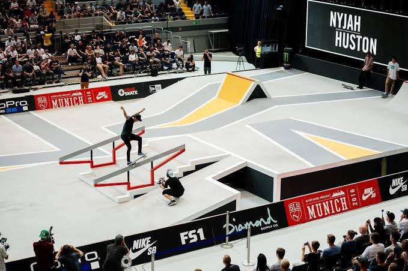
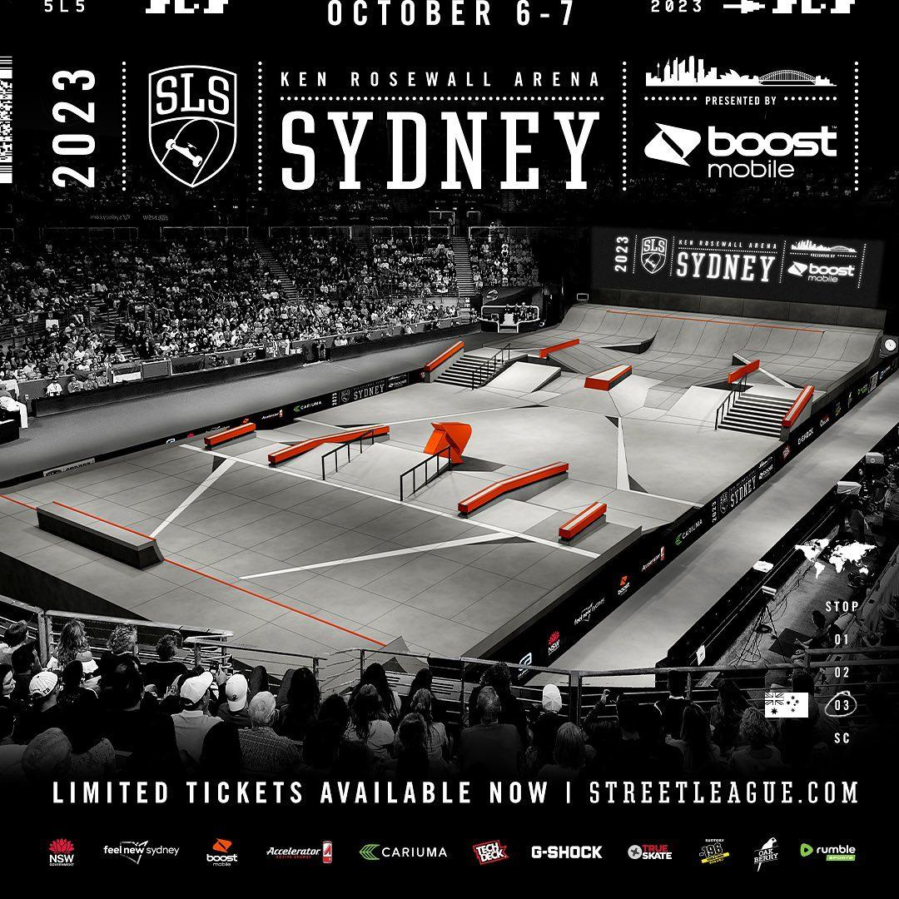
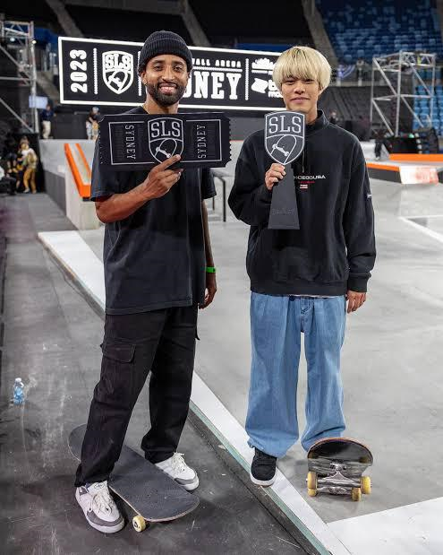

Street League Skateboarding (SLS) is an international skateboarding tournament series. The league features professional
street skateboarders competing for the largest monetary prize in the history of skateboarding, and was founded by
professional skateboarder and entrepreneur Rob Dyrdek. SLS was established to elevate skateboarding to a mainstream
audience and provide a platform for the world's best skateboarders to compete at the highest level.Impact on Skateboarding Culture: SLS has played
a role in shaping the culture of skateboarding, influencing how the sport is perceived

Evolution of Formats: SLS has evolved its competition formats over the years to keep the
events dynamic and engaging. This includes adjustments to the number of runs, the introduction of best trick sections, and changes to the overall
structure of competitions.Foundation SLS was officially founded in 2010, with the inaugural season taking place in 2011. Its creation aimed to establish
a standardized competitive format for professional skateboarders

Format:
SLS events feature a series of sections where skaters perform tricks on obstacles like rails,
ledges, and stairs. The competition includes a mix of individual runs and best trick attempts.
Scoring:
World Skate SLS World Tour: The SLS World Tour consists of international events held in various cities
around the world. Skaters earn points based on their performances at these events, contributing to their overall standings.
Championship:
The season culminates in the Super Crown World Championship, where the top-ranked skateboarders compete for the
title of SLS World Champion. The championship event typically features the highest level of competition.
Prize Money:
SLS offers substantial prize money for competitors, making it a lucrative venture for professional skateboarders.
This has contributed to the growth of skateboarding as a professional sport.
Impact:
SLS has played a significant role in elevating the visibility and professionalism of skateboarding. It has helped
legitimize skateboarding as a mainstream sport and has attracted a broader audience
